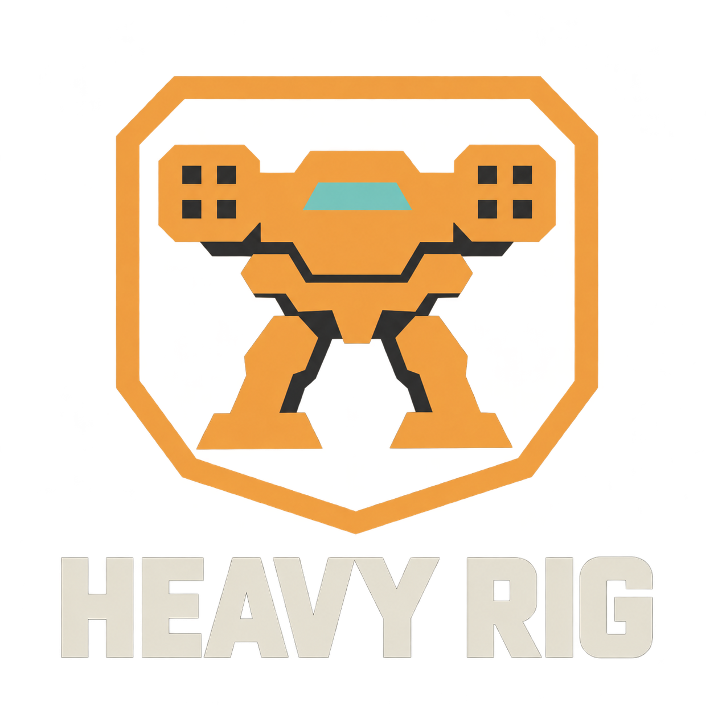

BORROW SOME FREEDOM.
Two frames. One way out. Choose your rig.
ONE MORE TRY.
The guards caught up. Try the escape again, or choose the other rig. Your company is untouched.

Your steel. Your crew.
Your next contract.
New company
TRAINING LOADOUT
SITUATION SIM
MISSION COMPLETE
Courier recovery
Cross the fissure with Kite. Hold the recorder for five seconds, then reach pickup and hold for three.
Amber follows the open haul road. Cyan takes the service road past the ore sheds.
Travel 2.27 km to the relay with Kite. Your arrival starts the defense countdown. Watch the eastern approaches for dropships.
Amber is the direct route. Cyan swings south past pickup. The red approaches show likely enemy routes.
STANDING BY.
Your throttle and operation are preserved.
SIGNAL UNBROKEN.
SETTINGS
TabsDifficulty changes apply to the next deployment.
Preferences are saved on this device.
KEYBOARD / MOUSE · Select an action, then press a key or click its row with a mouse button. Assigning replaces its aliases and moves that input from any other action. Escape cancels.
Choose an action to remap its button. Choosing a button already in use swaps the two assignments.
Legs. Tank uses persistent throttle and left/right steering. Arcade moves in screen directions and slows on release. Touch always uses Arcade.
Controller torso. Rotate turns with left/right stick input and holds heading on release, within the firing arc. Point aims in screen directions and returns to forward aim on release.
KNOW YOUR FRAME.
TabsCOMMAND DECK
Department navigation preserves your selected page, focus, and refit draft. A picker or confirmation owns input until you close it. Navigation never purchases, queues work, or advances time.
Your legs and turret move independently. Tank controls use persistent throttle and steering. In Arcade, the mapped movement keys accelerate you in that screen direction while the legs turn. Release to slow. Mouse aim works in both modes. Touch always uses arcade movement.
TOUCH PILOTING
Point the left stick toward the heading you want; push farther for more speed. Release to slow; STOP selects neutral. Touch always uses arcade movement.
Tap a visible hostile to track it, or use NEXT. The legs turn or back up to keep the aim in arc. Tap the same hostile again to clear the lock. Tap empty ground to lock a heading, then tap its square marker again to clear it. Destroyed contacts drop the lock. Tap fitted mount chips to arm any combination, then hold FIRE. VENT uses a coolant charge. Tap the info icon to show or hide battlefield labels. Open Pause and tap FULL to enter fullscreen where the browser supports it.
FRONTIER CONTRACTS
Use the Starmap to find orange-ringed conflict zones. Inspect local factions and arrival-day postings, then jump to accept work. Borders move as calendar days advance; successful missions expand employer influence nearby. Failure or abort strengthens the opposition. Stage local contracts and commit the day from Operations to apply their standing costs.
Assign up to four pilots and rigs per contract in Deploy. Each pilot and rig deploys once per day. You play the mission with the commander. Other crews use their skills and rigs to resolve objective and extraction checks. All results appear together after one campaign day.
COMPANY REPUTATION
Company rank is separate from faction standing. Successful extraction earns permanent company reputation; failure, aborts, travel, waiting, and training earn none. The board shows the toughest posting you qualify for in each mission type. Higher rank opens better-paying jobs against heavier forces. Employers also consider faction standing, and local work remains available even at hostile standing. Check the briefing for opposition and the Reputation page for progress.
Equipment and damage persist between sorties. Aborting or reloading a live sortie recovers its rigs with their recorded damage. Other committed crews finish their missions and the calendar advances one day. See each rig in the debrief and open Engineering for repairs.
MANAGE HEAT
Sustained fire locks all weapons at 100 heat until the reactor cools to 35. Vent with limited coolant or cease fire. Energy weapons require no ammunition but generate substantially more heat.
READ THE FIELD
Fixed artillery emplacements can target you anywhere on the map. After a two-second targeting warning, each gun fires toward a scattered point near you. The orange circle marks its blast area. You have two seconds to clear it. The blast can hit ground units on either side. Destroy an emplacement during targeting to interrupt its shot. Teal circles mark allied mortar fire. Flank armored siege frames or attack during the EXPOSED recovery window. The Crown fires larger barrages below half armor.
FRAME TACTICS
Harrow fires its mortar from mount 1 using AC rounds. Stop for 0.8 seconds, align the torso and aim at ground or a selected target between 200 and 1,750 m. You can lob over cover. Moving breaks the brace. Barrage spreads three shells across the aim line, while Siegebreaker hits facilities harder.
Bastion’s front plate follows its torso and cuts direct damage inside its 110° arc. Flanking fire, splash and overhead hits bypass it. Specter Pathfinder identifies nearby offscreen contacts, Disruptor slows hostile weapon cycles within 300 m, and Designator marks selected targets after 0.6 seconds of clear observation. Both your weapons and squad fire hit marked targets harder.
COMPLETE SALE LOADOUTS
Sale mechs include a random compatible weapon in every hardpoint and standard ammunition. Packages use your highest unlocked weapon quality or one tier below it; new companies see tier 0 only. The Market lists the exact weapons, operating weight, and complete price before purchase. Packages stay fixed while browsing, waiting, or reloading and refresh after a jump or contract. Chassis remain available without a rank gate.
WEAPON TIERS 0–5
The weapon catalogue stocks each model at the highest tier unlocked by your company rank. The tier appears beside the weapon name. Higher tiers improve damage, range, cycling, heat efficiency, projectile speed, and spread. Mass, ammunition capacity, and hardpoint requirements stay the same. Each model and tier is a separate inventory copy; weapons do not level up during combat.
BUILD YOUR ARSENAL
Buy armaments at the Market, then fit owned copies to the named hardpoints in the Mech Bay. Each hardpoint holds one weapon of the same family: ballistic, energy, or launcher. Small mounts take Small weapons, Medium mounts accept up to Medium, and Large mounts accept any size in that family. Queue the refit in Engineering; each changed mount takes one calendar day. Mechs under work cannot deploy.
All weapons aim with the turret; missiles guide toward a lock, rockets fly straight. Cluster ordnance bursts over an area. PPC bolts pierce targets.
AMMUNITION & WEIGHT
Choose per-mount reserves in the Mech Bay. Ammunition changes alone cost no credits or calendar time. Loads refill free before each sortie; there is no resupply on the surface. Every projectile consumes a round, including partial launcher volleys.
Base mass includes fixed equipment. Installed weapons and remaining ammunition add weight. Recommended operating weight gives nominal cruise speed. Extra weight causes a steep speed penalty; lighter loads give a modest bonus. Overweight deployment is allowed. You become lighter as you fire.
REFIT & RECOVER
Combat has no repair or coolant drops. Repairs restore integrity only when their work order completes: one day per 20 missing integrity, with no credit cost.
Use Engineering to advance time or jump between planets. Multiple mechs can undergo work in parallel. Each sortie carries two coolant charges.
READY FOR THE LINE.
Frame qualification complete: throttle, steering, weapons, heat, and artillery evasion. Pick a loadout to continue practicing in the range.
ABANDON THIS RUN?
The current operation will be lost. Your recorded results and settings will be kept.
OPEN IN ANOTHER TAB.
Another tab changed this company's save. Play is paused here to protect the newer progress. Continue in that tab, or close it and reload this one.